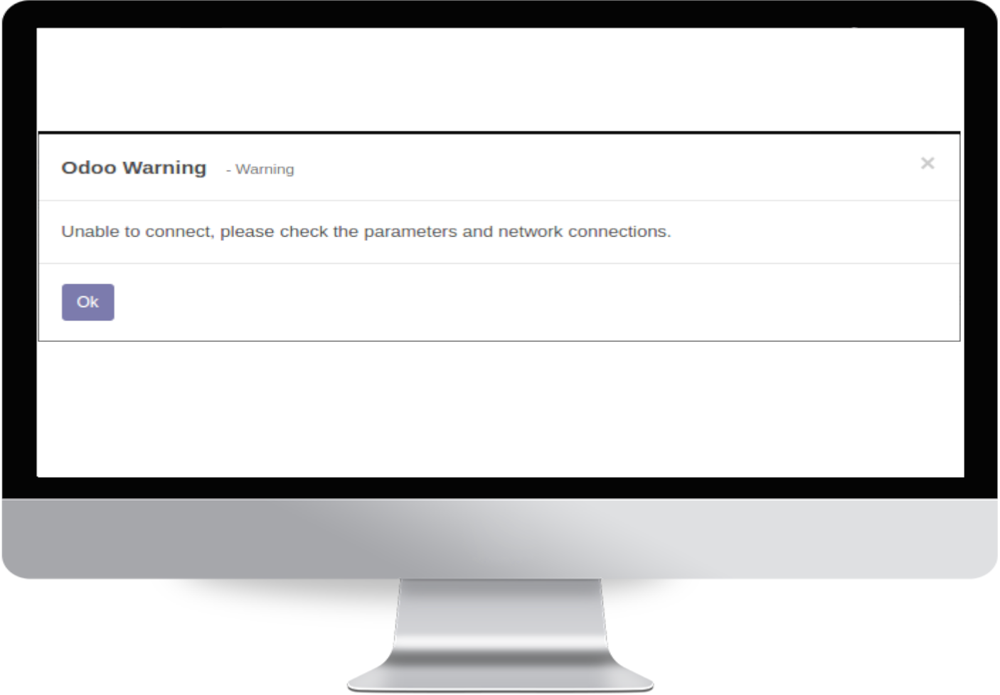
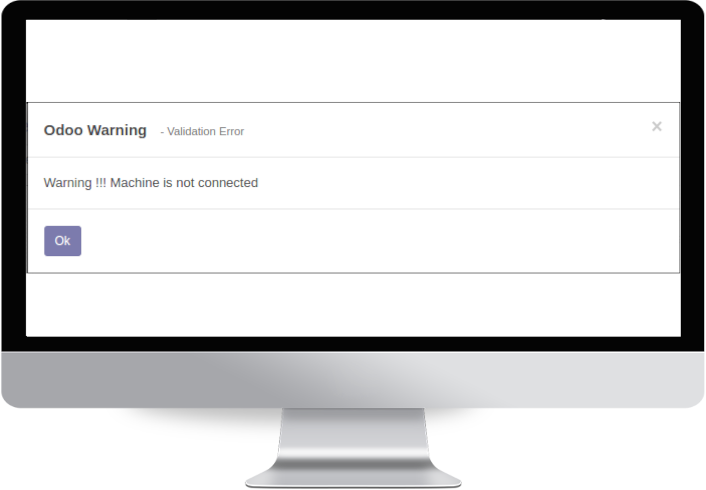

☑ Ingrates biometric device(Face+Thumb) with HR attendance. ☑ Option to keep the device attendance log in Odoo. ☑ Option to clear the device attendance log from both device and Odoo. ☑ Automating HR attendance. ☑ Option to configure multiple devices.
This module will support with
ZKteco model 'uFace 202'
ZKteco model 'iFace990'
Overview
Automation is an implementation factor for a successful ERP. With this module,
HR attendance can automate by integrating Thumb / Face detection device with Odoo.
We can configure a user both from thumbing device or Odoo employee form.
Biometric Device Configuration
Here you can configure your all devices with it's IP address and port number.
Download/Clear Device Attendance Log
After configuration, you can download your device attendance log into Odoo through
'Download' button.If the device is connected, then the Odoo will download all device
attendance log.
Otherwise, the Odoo will show you a warning message as follow.

You can also clear all attendance log from both Odoo and device via 'Clear' button.
If the device is not connected it will show you a warning message as follow.

Biometric Device Attendance Log
Here you can see all device attendance log
HR Attendance
Here, Odoo automatically generates HR attendance log while downloading the device attendance.
Employee Configuration
You can update existing employees with the 'Device Id' which are the id in the biometric device.
If there is no match with the biometric device id then system will automatically create corresponding employee.
Note:- This integration is only applicable for the the device ZKteco model 'uFace 202'
Please install zklib library (sudo pip install zklib)
Having any trouble in using the app? Or Do you need any further assistance?